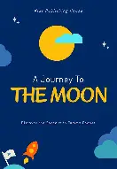

A jornada para a lua

Era uma vez uma lua, seu sonho era encontrar seu planeta, seu grande amor, seu lar. Assim ela parte em viagem pelo espaço, conhecendo vários planetas.Durante a jornada, a lua escreve cartas para aquele que seria seu, aguardando o momento que finalmente ela o encontraria.
Saiba mais